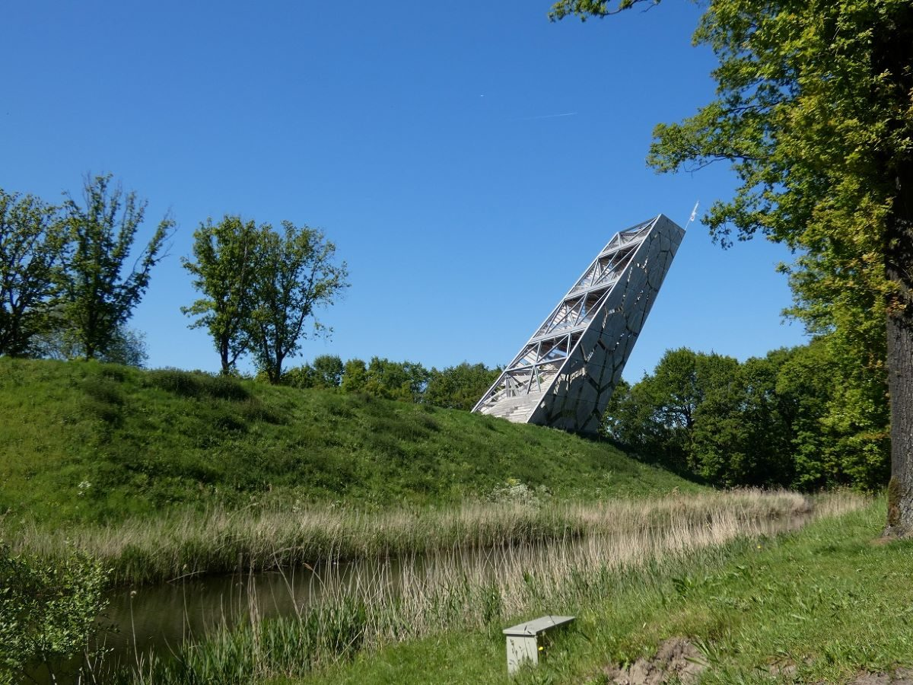
Fort de Roovere
Vesting uit de Tachtigjarige Oorlog op de West-Brabantse Waterlinie, met de Mozesbrug en uitkijktoren de Pompejus.
Cultuur en natuurMeer info
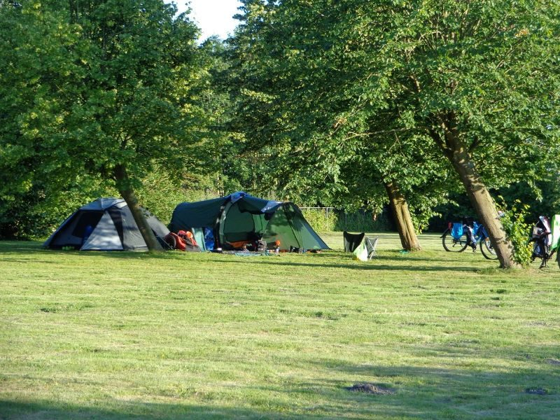
Een klein natuurkampeerterrein bij Nieuw-Vossemeer. Veel ruimte per kampeerder, geen auto's op het terrein en alle rust. In 2026 open van 11 mei tot en met 30 september.
Wij zijn een echt natuurkampeerterrein. Er zijn 15 plaatsen, vooral voor tenten, en alle rust en ruimte voor iedereen.
We hebben ruim plek voor tenten. Je kiest zelf waar je staat, er is ruimte genoeg.
Ook zonder reservering. Je kiest net als de andere tenten zelf een plek, en loungestoelen zijn bij ons te leen.
Er zijn 3 plekken voor een kleine caravan (tot 5 meter) of vouwwagen. Die kun je alleen na reservering gebruiken.
Met Hemelvaart en Pinksteren ontvangen we alleen tenten en hangmatten, na reservering.
Geen plaats voor kampeerbusjes, campers, daktenten of honden.
Beschut tussen een paar boswallen en een oude dijk, met een kikkerput en bomen en struiken die hier van nature thuishoren. Op de zanderige kleigrond blijft het gras ook bij droogte lang groen.
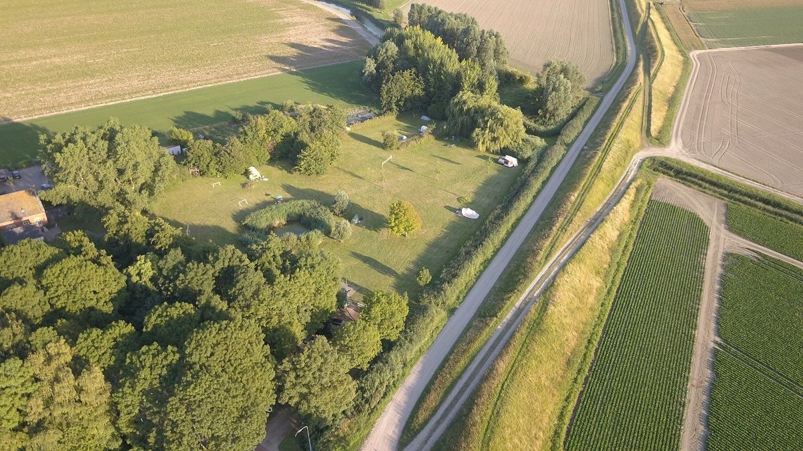
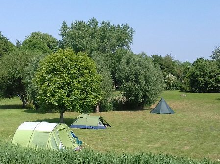
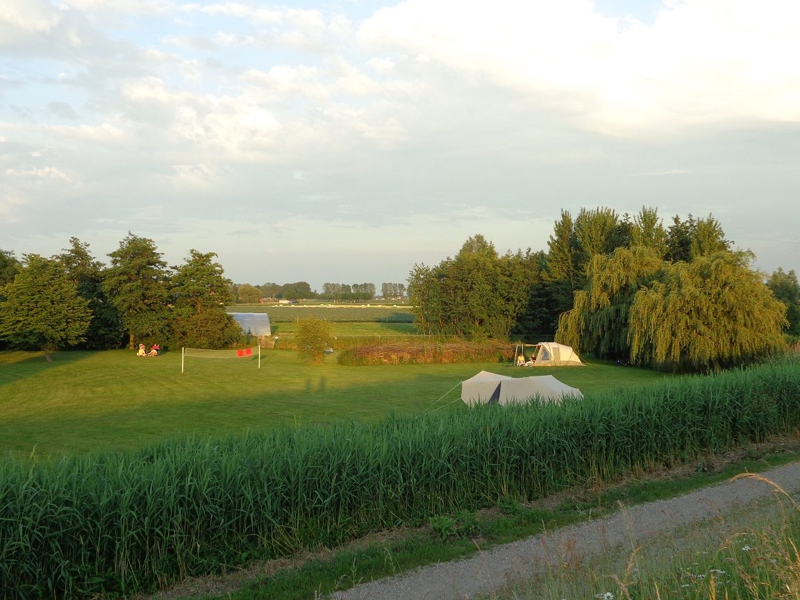
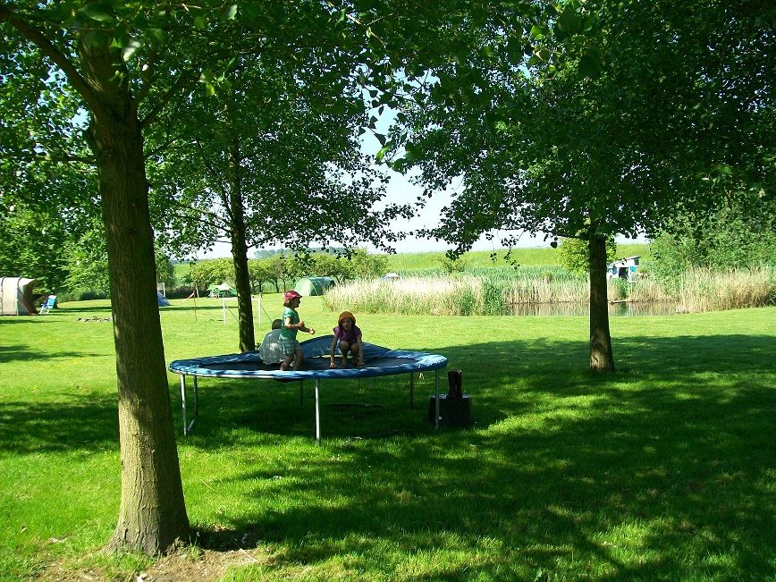
Kinderen vermaken zich bij ons prima. De grootste speelplaats is de natuur zelf, daar valt heel veel te ontdekken.
Er staan schepnetjes klaar om de kreek en de kikkerput te verkennen, en de natuurontdekkist is bij ons te leen.
De top 5 van onze kampeerders, plus een paar tips van ons. Klik voor meer informatie.

Vesting uit de Tachtigjarige Oorlog op de West-Brabantse Waterlinie, met de Mozesbrug en uitkijktoren de Pompejus.
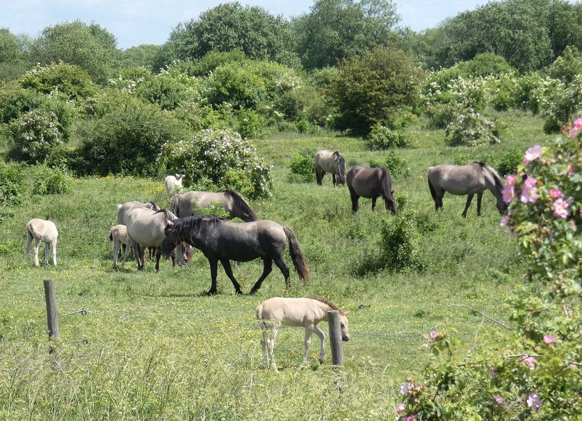
Ruige natuur buitendijks, waar je tussen wilde pony's, Schotse hooglanders en wisenten door loopt.
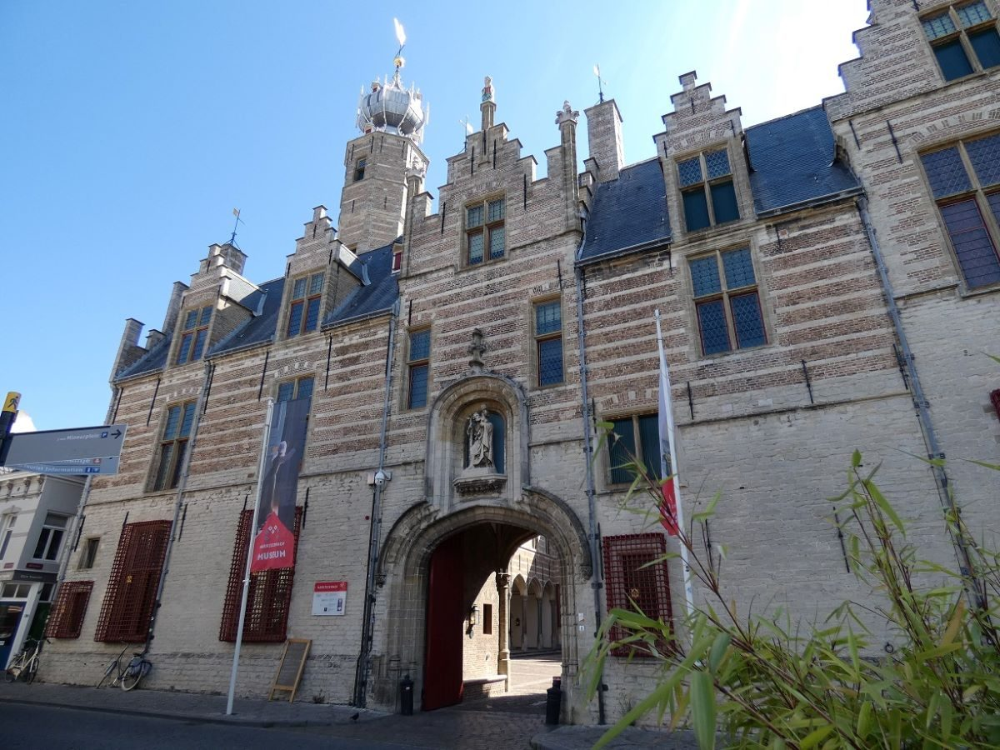
De oude markiezenstad op de Brabantse Wal. Een aanrader voor cultuur, winkelen en eten.
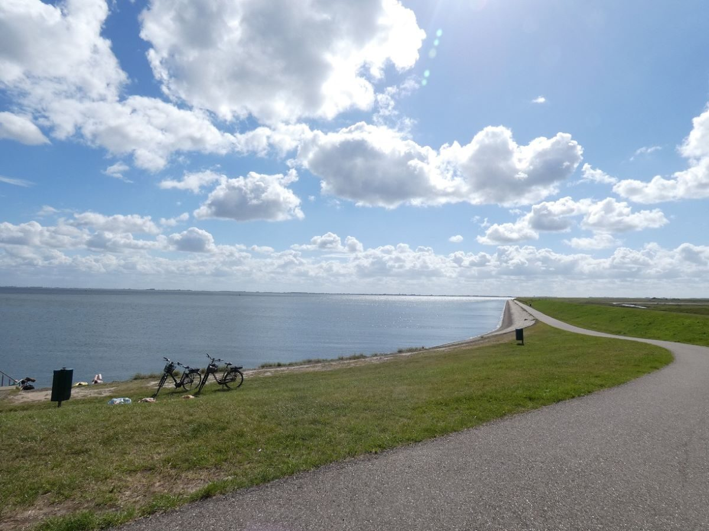
Langs vestingstadje Tholen, bloemenvelden en bloeiende akkerranden, met een pauze aan de Oosterschelde.
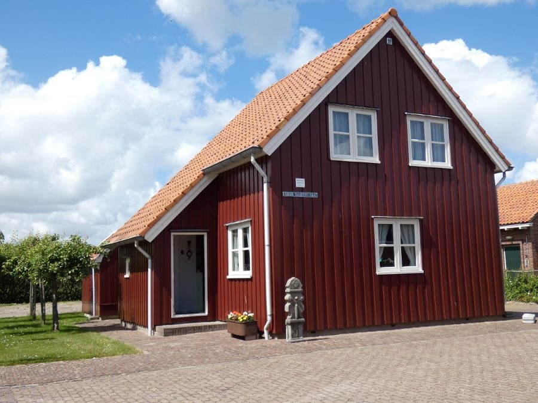
Wat gebeurde er in 1953? Het museum in Ouwerkerk zit in de caissons waarmee de stroomgaten werden gedicht.
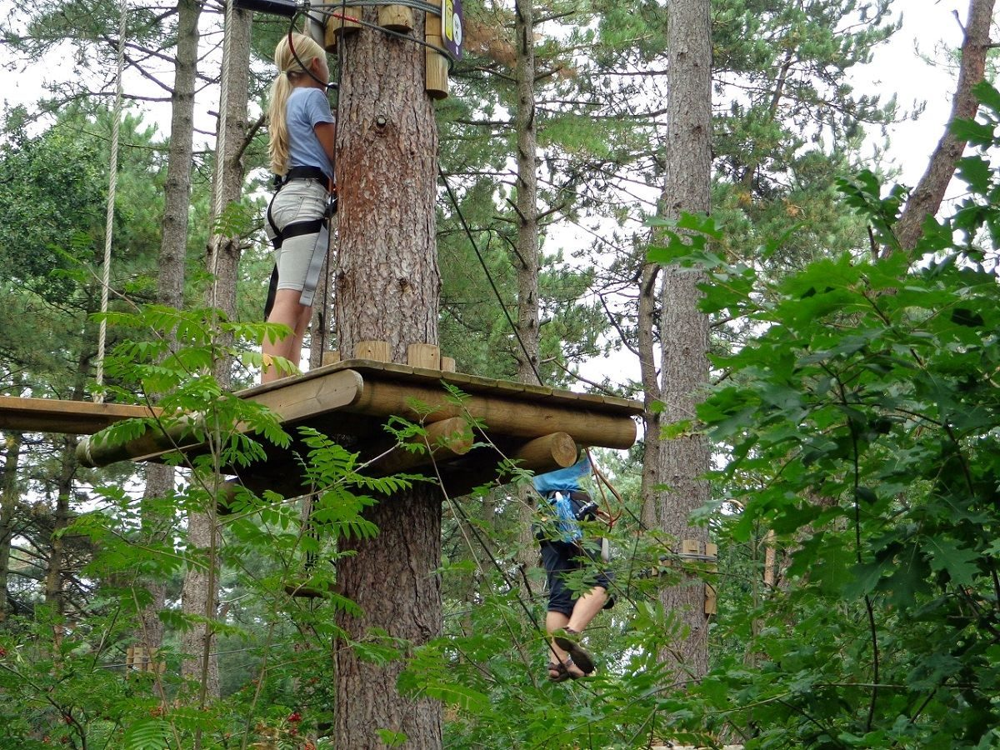
In het bos op de Brabantse Wal: klimbos, blotevoetenpad, speeltuin en zelf fruit plukken.
Nog meer ideeën, zoals Willemstad, Antwerpen en de Kalmthoutse Heide, vind je in de folders op ons terrein.
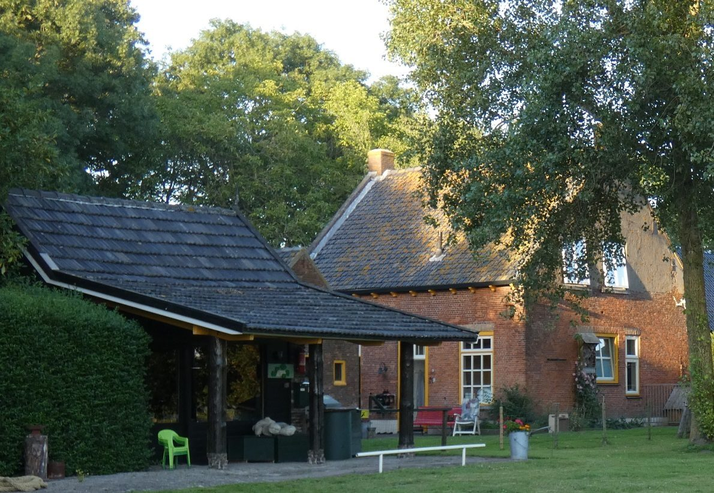
Ons huis dateert van ongeveer 1870. Precies weten we het niet, want bij de watersnoodramp zijn de gegevens verloren gegaan. Later kochten we de helft van de landbouwgrond van onze buren, vol fruitbomen en struiken.
Met hulp van Brabants Landschap hebben we het terrein ingericht met bomen en struiken die hier van nature thuishoren, en de kikkerput aangelegd. Sinds de zomer van 2000 ontvangen we graag gasten, zodat zij hier net zo van kunnen genieten als wij.
Jaap, Pien, Hester en Adri van Oudheusden
Fiets- en wandelkampeerders zijn altijd welkom. Met mooi weer raden we reserveren ook voor tenten aan.
Inclusief € 1,40 toeristenbelasting per persoon per nacht en 9% btw.
Laat je naam, de datum van aankomst en vertrek, het aantal personen en je kampeermiddel weten. Je reservering is geldig zodra je een bevestiging van ons hebt.
Voor actuele informatie over de bezetting kun je ons voicemailnummer bellen: 06 123 203 80.
ReserverenNatuurkampeerkaart nodigOm bij ons te kamperen heb je een natuurkampeerkaart van de Stichting Natuurkampeerterreinen nodig. Die is bij ons op het terrein te koop. Meer informatie
Het groene boekjeHierin staan alle bijna 150 natuurkampeerterreinen. Ook verkrijgbaar bij ons, voor een meerprijs.
HondenHonden zijn op ons terrein niet toegestaan.
Vul je gegevens in, dan sturen we je zo snel mogelijk een bevestiging.
Liever mailen? Dat kan ook via bijdekreek@gmail.com.
Je reservering is geldig zodra je onze bevestiging hebt ontvangen.
De ingang ligt tegenover Moorseweg 4, zo'n 2 kilometer buiten het dorp Nieuw-Vossemeer.
Bel ons voor actuele informatie over de bezetting. Krijg je de voicemail, spreek dan je vraag in of stuur een mail.
Met de auto of caravanNeem op de A4 afslag 25 Steenbergen en volg de borden naar Nieuw-Vossemeer, niet de navigatie. Rij langs het dorp, ga vlak voor de brug linksaf de Moorseweg op. Na 3 km ligt ons terrein rechts.
FietsersWe liggen tussen de knooppunten 50, 51 en 53. Vanaf het dorp is het nog 2 km, de LF Waterlinie ligt op 5,5 km.
WandelaarsTussen wandelpunt 24 en 29 van het netwerk West-Brabant. Het Deltapad ligt op 1 km, het Floris V-pad op 6 km.
Openbaar vervoerStation Bergen op Zoom ligt op 13 km. Bushalte Nieuw-Vossemeer, Molenweg op 3,5 km.